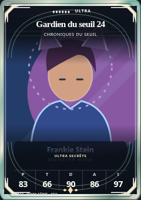
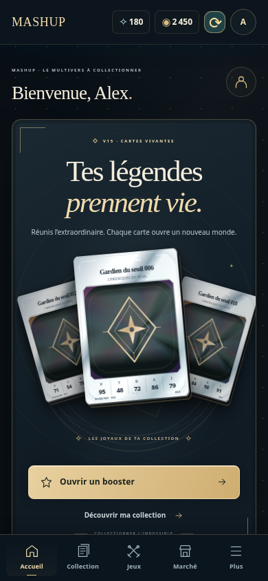
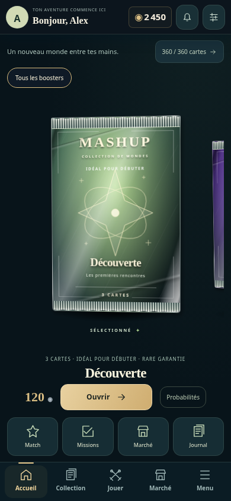

Les cartes restent identiques
Comparaison à taille et lumière fixes ; les moteurs et les matériaux d’origine sont conservés.


Captures du vrai client dans Chromium Linux, à 390 × 844 px. Référence publiée 79172e1 et branche V16. Comptes, catalogue et services fictifs ; aucun téléphone physique ni backend déployé testé.


Comparaison à taille et lumière fixes ; les moteurs et les matériaux d’origine sont conservés.

Mesures réseau brutes · Tests de navigation · Comparaison des pixels